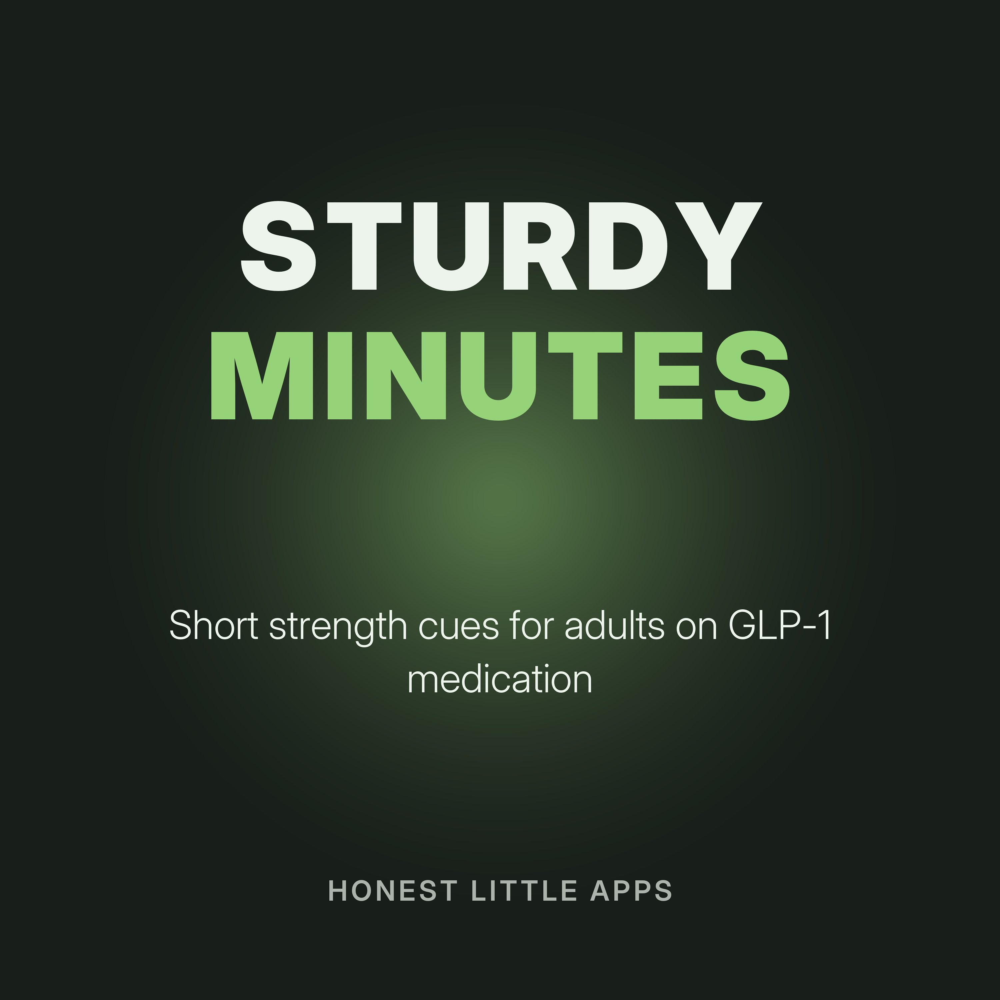

Sturdy Minutes: Strength Cues on GLP-1
Short episodes for adults using GLP-1 or other prescribed weight-management medication who want to keep strength: why resistance training matters, how to start small, form cues for basic moves, and making protein simple. General information, not medical advice. Talk to your prescriber or clinician before starting a new exercise program.
Made by Honest Little Apps, the makers of Sturdy: Strength on GLP-1, a private iPhone strength planner and protein log. No account. Narrated with a synthetic (text-to-speech) voice.
- Why strength matters while losing weightWhen people lose weight, some of what they lose can be muscle, not just fat.
- Start smaller than you thinkThe best first workout is one you'll want to do again.
- The sit-to-standSit on a sturdy chair. Feet flat, hip-width apart.
- The wall push-upStand facing a wall, a little more than arm's length away.
- Protein without the stressWhen appetite is low, protein can be hard to fit in.
- Tracking progress that isn't the scaleThe scale doesn't show strength.